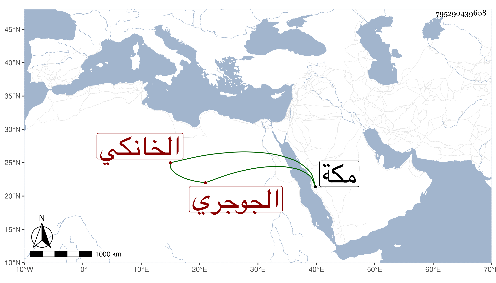

0902Sakhawi.DawLamic.ITO20230111-ara1.EIS1600.795290439608
Biography ID: 795290439608
136
محمد بن محمد بن أحمد ناصر الدين الجوجري ثم الخانكي أحد تجارها وأخو عبد الغني الماضي وذاك أصغرهما . حج هو وأخوه وكان في سمعه ثقل فلما انتهوا لرابغ قيل فبادر واغتسل للاحرام فحم واستمر حتى دخل مكة . ومات في ليلة الجمعة ثاني ذي الحجة سنة اثنتين وتسعين ودفن من الغد .
